Пропорциональность — это взаимосвязь между двумя величинами, при которой изменение одной из них влечет за собой изменение другой во столько же раз.
Пропорциональность бывает прямой и обратной. В данном уроке мы рассмотрим каждую из них.
Содержание урокаПрямая пропорциональность
Допустим автомобиль двигается со скоростью 50 км/ч. Мы помним, что скорость это расстояние, пройденное за единицу времени (1 час, 1 минуту или 1 секунду). В нашем примере автомобиль двигается со скоростью 50 км/ч, то есть за один час он будет проезжать расстояние, равное пятидесяти километрам.
Изобразим на рисунке расстояние, пройденное автомобилем за 1 час
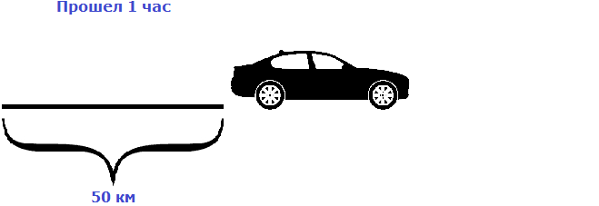
Пусть автомобиль проехал еще один час с той же скоростью, равной пятидесяти километрам в час. Тогда получится, что автомобиль проедет 100 км
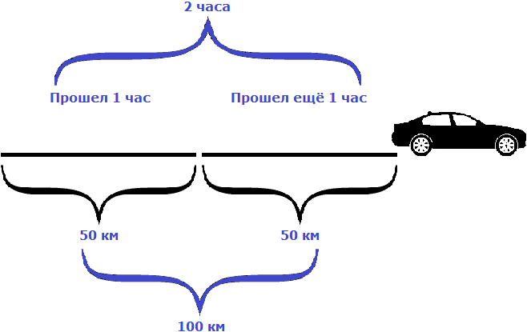
Как видно из примера, увеличение времени в два раза привело к увеличению пройденного расстояния во столько же раз, то есть в два раза.
Такие величины, как время и расстояние называют прямо пропорциональными. А взаимосвязь между такими величинами называют прямой пропорциональностью.
Прямой пропорциональностью называют взаимосвязь между двумя величинами, при которой увеличение одной из них влечет за собой увеличение другой во столько же раз.
и наоборот, если одна величина уменьшается в определенное число раз, то другая уменьшается во столько же раз.
Предположим, что изначально планировалось проехать на автомобиле 100 км за 2 часа, но проехав 50 км, водитель решил отдохнуть. Тогда получится, что уменьшив расстояние в два раза, время уменьшится во столько же раз. Другими словами, уменьшение пройденного расстояния приведет к уменьшению времени во столько же раз.
Интересная особенность прямо пропорциональных величин заключается в том, что их отношение всегда постоянно. То есть при изменении значений прямо пропорциональных величин, их отношение остается неизменным.
В рассмотренном примере расстояние сначала было равно 50 км, а время одному часу. Отношение расстояния ко времени есть число 50.
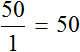
Но мы увеличили время движения в 2 раза, сделав его равным двум часам. В результате пройденное расстояние увеличилось во столько же раза, то есть стало равно 100 км. Отношение ста километров к двум часам опять же есть число 50
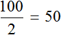
Число 50 называют коэффициентом прямой пропорциональности. Он показывает сколько расстояния приходится на час движения. В данном случае коэффициент играет роль скорости движения, поскольку скорость это отношение пройденного расстояния ко времени.
Из прямо пропорциональных величин можно составлять пропорции. К примеру, отношения
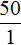
и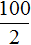
составляют пропорцию: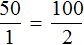
Это отношение можно прочитать следующим образом:
Пятьдесят километров так относятся к одному часу, как сто километров относятся к двум часам.
Пример 2. Стоимость и количество купленного товара являются прямо пропорциональными величинами. Если 1 кг конфет стоит 30 рублей, то 2 кг этих же конфет обойдутся в 60 рублей, 3 кг в 90 рублей. С увеличением стоимости купленного товара, его количество увеличивается во столько же раз.
Поскольку стоимость товара и его количество являются прямо пропорциональными величинами, то их отношение всегда постоянно.
Запишем чему равно отношение тридцати рублей к одному килограмму
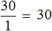
Теперь запишем чему равно отношение шестидесяти рублей к двум килограммам. Это отношение опять же будет равно тридцати:
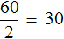
Здесь коэффициентом прямой пропорциональности является число 30. Этот коэффициент показывает сколько рублей приходится на килограмм конфет. В данном примере коэффициент играет роль цены одного килограмма товара, поскольку цена это отношение стоимости товара на его количество.
Обратная пропорциональность
Рассмотрим следующий пример. Расстояние между двумя городами 80 км. Мотоциклист выехал из первого города, и со скоростью 20 км/ч доехал до второго города за 4 часа.
Если скорость мотоциклиста составила 20 км/ч это значит, что каждый час он проезжал расстояние равное двадцати километрам. Изобразим на рисунке расстояние, пройденное мотоциклистом, и время его движения:
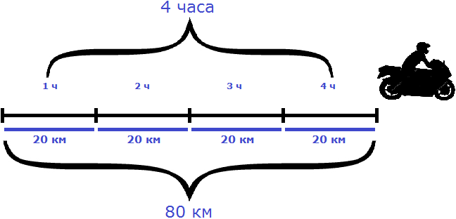
На обратном пути скорость мотоциклиста была 40 км/ч, и на тот же путь он затратил 2 часа.
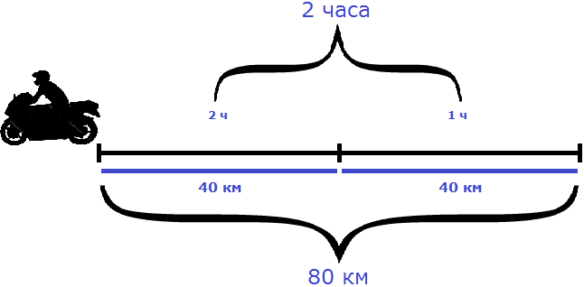
Легко заметить, что при изменении скорости, время движения изменилось во столько же раз. Причем изменилось в обратную сторону — то есть скорость увеличилась, а время наоборот уменьшилось.
Такие величины, как скорость и время называют обратно пропорциональными. А взаимосвязь между такими величинами называют обратной пропорциональностью.
Обратной пропорциональностью называют взаимосвязь между двумя величинами, при которой увеличение одной из них влечет за собой уменьшение другой во столько же раз.
и наоборот, если одна величина уменьшается в определенное число раз, то другая увеличивается во столько же раз.
К примеру, если на обратном пути скорость мотоциклиста составила бы 10 км/ч, то те же 80 км он преодолел бы за 8 часов:
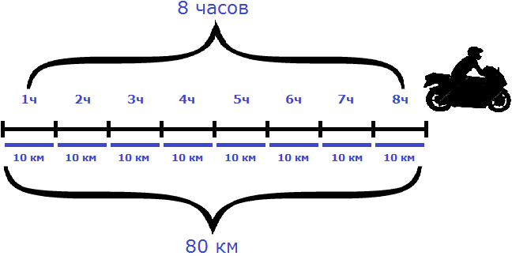
Как видно из примера, уменьшение скорости привело к увеличению времени движения во столько же раз.
Особенность обратно пропорциональных величин заключается в том, что их произведение всегда постоянно. То есть при изменении значений обратно пропорциональных величин, их произведение остается неизменным.
В рассмотренном примере расстояние между городами было равно 80 км. При изменении скорости и времени движения мотоциклиста, это расстояние всегда оставалось неизменным
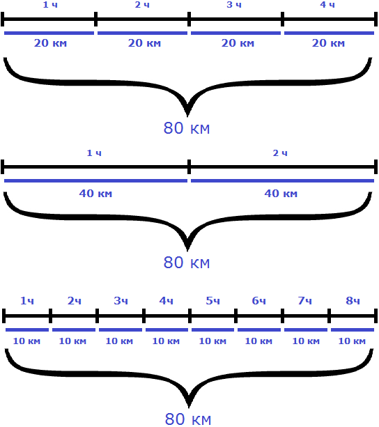
Мотоциклист мог проехать это расстояние со скоростью 20 км/ч за 4 часа, и со скоростью 40 км/ч за 2 часа, и со скоростью 10 км/ч за 8 часов. Во всех случаях произведение скорости и времени было равно 80 км
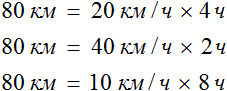
Понравился урок?
Вступай в нашу новую группу Вконтакте и начни получать уведомления о новых уроках
Возникло желание поддержать проект?
Используй кнопку ниже